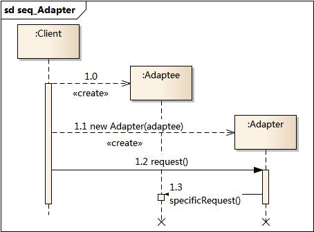

1. 适配器模式¶
1.1. 模式动机¶
在软件开发中采用类似于电源适配器的设计和编码技巧被称为适配器模式。
通常情况下，客户端可以通过目标类的接口访问它所提供的服务。有时，现有的类可以满足客户类的功能需要，但是它所提供的接口不一定是客户类所期望的，这可能是因为现有类中方法名与目标类中定义的方法名不一致等原因所导致的。
在这种情况下，现有的接口需要转化为客户类期望的接口，这样保证了对现有类的重用。如果不进行这样的转化，客户类就不能利用现有类所提供的功能，适配器模式可以完成这样的转化。
在适配器模式中可以定义一个包装类，包装不兼容接口的对象，这个包装类指的就是适配器(Adapter)，它所包装的对象就是适配者(Adaptee)，即被适配的类。
适配器提供客户类需要的接口，适配器的实现就是把客户类的请求转化为对适配者的相应接口的调用。也就是说：当客户类调用适配器的方法时，在适配器类的内部将调用适配者类的方法，而这个过程对客户类是透明的，客户类并不直接访问适配者类。因此，适配器可以使由于接口不兼容而不能交互的类可以一起工作。这就是适配器模式的模式动机。
1.2. 模式定义¶
适配器模式(Adapter Pattern) ：将一个接口转换成客户希望的另一个接口，适配器模式使接口不兼容的那些类可以一起工作，其别名为包装器(Wrapper)。适配器模式既可以作为类结构型模式，也可以作为对象结构型模式。
1.3. 模式结构¶
适配器模式包含如下角色：
Target：目标抽象类
Adapter：适配器类
Adaptee：适配者类
Client：客户类
适配器模式有对象适配器和类适配器两种实现：
对象适配器：

类适配器：

1.4. 时序图¶
1.5. 代码分析¶
1#include <iostream>
2#include "Adapter.h"
3#include "Adaptee.h"
4#include "Target.h"
5
6using namespace std;
7
8int main(int argc, char *argv[])
9{
10 Adaptee * adaptee = new Adaptee();
11 Target * tar = new Adapter(adaptee);
12 tar->request();
13
14 return 0;
15}
1///////////////////////////////////////////////////////////
2// Adapter.h
3// Implementation of the Class Adapter
4// Created on: 03-十月-2014 17:32:00
5// Original author: colin
6///////////////////////////////////////////////////////////
7
8#if !defined(EA_BD766D47_0C69_4131_B7B9_21DF78B1E80D__INCLUDED_)
9#define EA_BD766D47_0C69_4131_B7B9_21DF78B1E80D__INCLUDED_
10
11#include "Target.h"
12#include "Adaptee.h"
13
14class Adapter : public Target
15{
16
17public:
18 Adapter(Adaptee *adaptee);
19 virtual ~Adapter();
20
21 virtual void request();
22
23private:
24 Adaptee* m_pAdaptee;
25
26};
27#endif // !defined(EA_BD766D47_0C69_4131_B7B9_21DF78B1E80D__INCLUDED_)
1///////////////////////////////////////////////////////////
2// Adapter.cpp
3// Implementation of the Class Adapter
4// Created on: 03-十月-2014 17:32:00
5// Original author: colin
6///////////////////////////////////////////////////////////
7
8#include "Adapter.h"
9
10Adapter::Adapter(Adaptee * adaptee){
11 m_pAdaptee = adaptee;
12}
13
14Adapter::~Adapter(){
15
16}
17
18void Adapter::request(){
19 m_pAdaptee->specificRequest();
20}
1///////////////////////////////////////////////////////////
2// Adaptee.h
3// Implementation of the Class Adaptee
4// Created on: 03-十月-2014 17:32:00
5// Original author: colin
6///////////////////////////////////////////////////////////
7
8#if !defined(EA_826E6B4F_12BE_4609_A0A3_95BD5E657D36__INCLUDED_)
9#define EA_826E6B4F_12BE_4609_A0A3_95BD5E657D36__INCLUDED_
10
11class Adaptee
12{
13
14public:
15 Adaptee();
16 virtual ~Adaptee();
17
18 void specificRequest();
19
20};
21#endif // !defined(EA_826E6B4F_12BE_4609_A0A3_95BD5E657D36__INCLUDED_)
运行结果：

1.6. 模式分析¶
1.7. 实例¶
1.8. 优点¶
将目标类和适配者类解耦，通过引入一个适配器类来重用现有的适配者类，而无须修改原有代码。
增加了类的透明性和复用性，将具体的实现封装在适配者类中，对于客户端类来说是透明的，而且提高了适配者的复用性。
灵活性和扩展性都非常好，通过使用配置文件，可以很方便地更换适配器，也可以在不修改原有代码的基础上增加新的适配器类，完全符合“开闭原则”。
- 类适配器模式还具有如下优点：
由于适配器类是适配者类的子类，因此可以在适配器类中置换一些适配者的方法，使得适配器的灵活性更强。
- 对象适配器模式还具有如下优点：
一个对象适配器可以把多个不同的适配者适配到同一个目标，也就是说，同一个适配器可以把适配者类和它的子类都适配到目标接口。
1.9. 缺点¶
- 类适配器模式的缺点如下：
对于Java、C#等不支持多重继承的语言，一次最多只能适配一个适配者类，而且目标抽象类只能为抽象类，不能为具体类，其使用有一定的局限性，不能将一个适配者类和它的子类都适配到目标接口。
- 对象适配器模式的缺点如下：
与类适配器模式相比，要想置换适配者类的方法就不容易。如果一定要置换掉适配者类的一个或多个方法，就只好先做一个适配者类的子类，将适配者类的方法置换掉，然后再把适配者类的子类当做真正的适配者进行适配，实现过程较为复杂。
1.10. 适用环境¶
在以下情况下可以使用适配器模式：
系统需要使用现有的类，而这些类的接口不符合系统的需要。
想要建立一个可以重复使用的类，用于与一些彼此之间没有太大关联的一些类，包括一些可能在将来引进的类一起工作。
1.11. 模式应用¶
Sun公司在1996年公开了Java语言的数据库连接工具JDBC，JDBC使得Java语言程序能够与数据库连接，并使用SQL语言来查询和操作数据。JDBC给出一个客户端通用的抽象接口，每一个具体数据库引擎（如SQL Server、Oracle、MySQL等）的JDBC驱动软件都是一个介于JDBC接口和数据库引擎接口之间的适配器软件。抽象的JDBC接口和各个数据库引擎API之间都需要相应的适配器软件，这就是为各个不同数据库引擎准备的驱动程序。
1.12. 模式扩展¶
- 认适配器模式(Default Adapter Pattern)或缺省适配器模式
当不需要全部实现接口提供的方法时，可先设计一个抽象类实现接口，并为该接口中每个方法提供一个默认实现（空方法），那么该抽象类的子类可有选择地覆盖父类的某些方法来实现需求，它适用于一个接口不想使用其所有的方法的情况。因此也称为单接口适配器模式。
1.13. 总结¶
结构型模式描述如何将类或者对象结合在一起形成更大的结构。
适配器模式用于将一个接口转换成客户希望的另一个接口，适配器模式使接口不兼容的那些类可以一起工作，其别名为包装器。适配器模式既可以作为类结构型模式，也可以作为对象结构型模式。
适配器模式包含四个角色：目标抽象类定义客户要用的特定领域的接口；适配器类可以调用另一个接口，作为一个转换器，对适配者和抽象目标类进行适配，它是适配器模式的核心；适配者类是被适配的角色，它定义了一个已经存在的接口，这个接口需要适配；在客户类中针对目标抽象类进行编程，调用在目标抽象类中定义的业务方法。
在类适配器模式中，适配器类实现了目标抽象类接口并继承了适配者类，并在目标抽象类的实现方法中调用所继承的适配者类的方法；在对象适配器模式中，适配器类继承了目标抽象类并定义了一个适配者类的对象实例，在所继承的目标抽象类方法中调用适配者类的相应业务方法。
适配器模式的主要优点是将目标类和适配者类解耦，增加了类的透明性和复用性，同时系统的灵活性和扩展性都非常好，更换适配器或者增加新的适配器都非常方便，符合“开闭原则”；类适配器模式的缺点是适配器类在很多编程语言中不能同时适配多个适配者类，对象适配器模式的缺点是很难置换适配者类的方法。
适配器模式适用情况包括：系统需要使用现有的类，而这些类的接口不符合系统的需要；想要建立一个可以重复使用的类，用于与一些彼此之间没有太大关联的一些类一起工作。